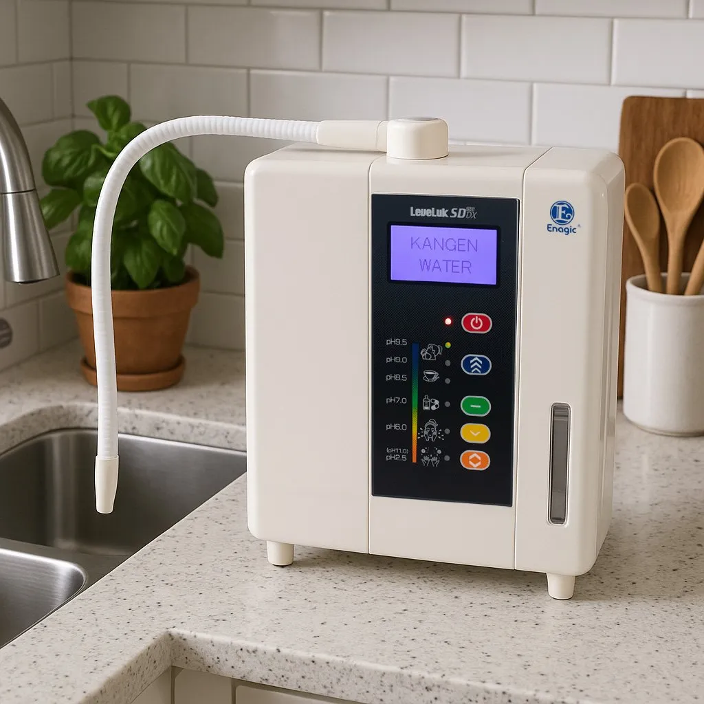
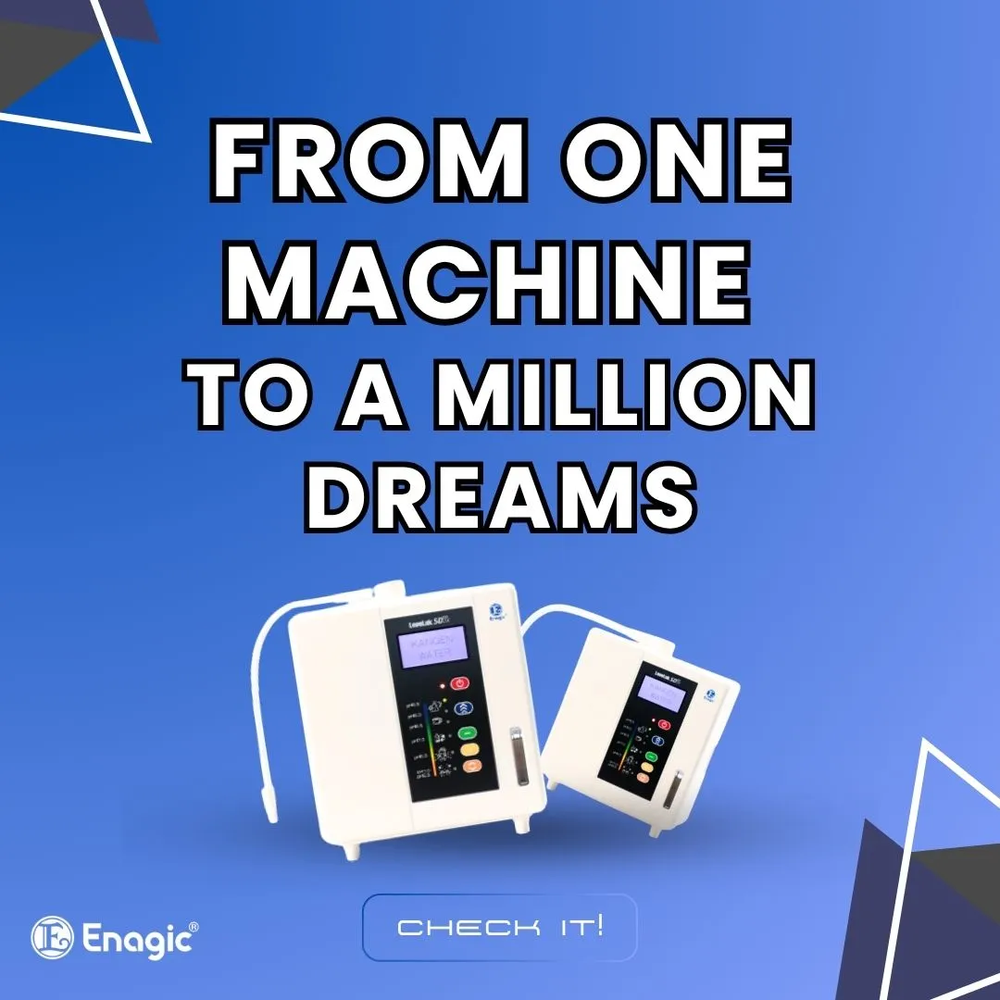
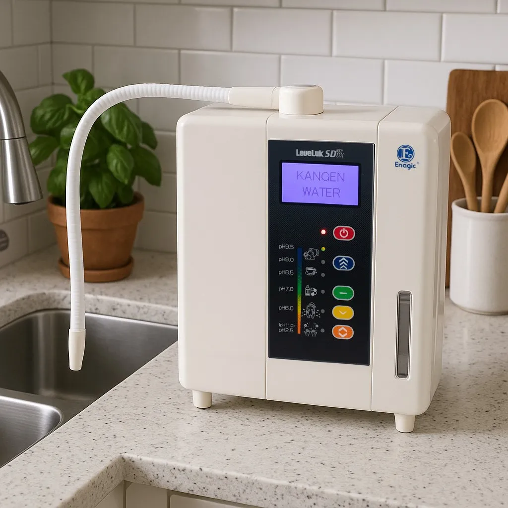
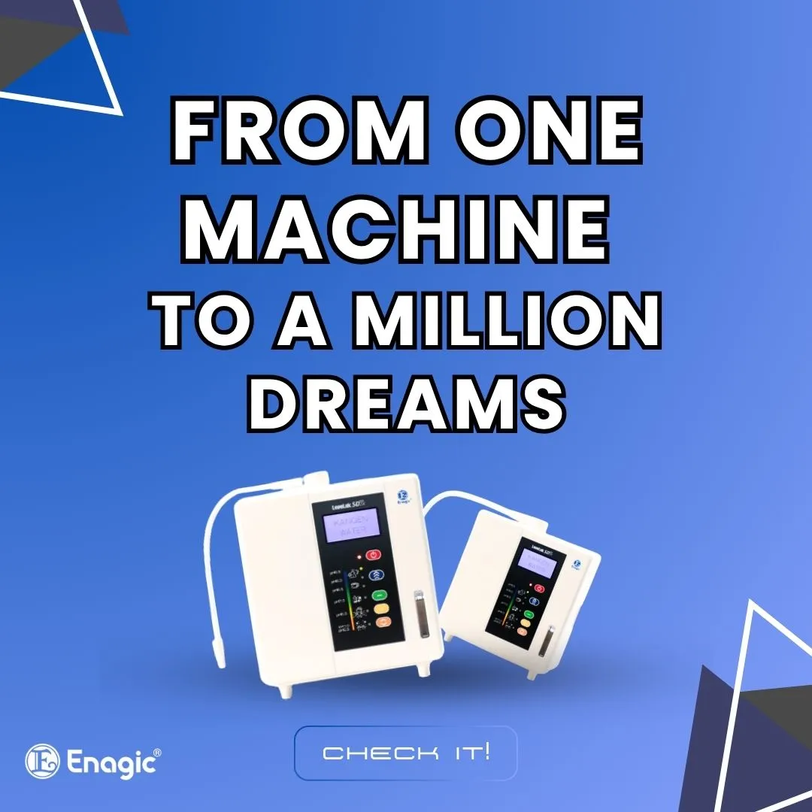

Overview
The Leveluk SD501DX is the next-generation home-use Kangen Water® machine featuring a sleek, modern design and powerful performance. With 7 platinum-coated titanium plates and multilingual voice prompts, this model delivers high antioxidant water effortlessly in 5 different types — suitable for every need, from drinking to disinfecting.
ORP: -631 mV
Delivers high negative ORP for optimal antioxidant potential.
Enjoy refreshing, ionized water that helps combat free radicals and supports cellular health every day.
pH Range
Health Benefits
- Produces antioxidant-rich, alkaline Kangen Water® for hydration
- Ideal for drinking, cooking, skincare, and food cleaning
- Generates 5 versatile types of water for all household needs
- Compact, modern design with voice guidance in 8 languages

Advanced Home Use Model
The SD501DX uses advanced electrolysis technology to produce 5 types of Kangen Water®. Its 7 platinum-coated titanium electrode plates offer powerful ionization, delivering strong antioxidant potential and exceptional hydration.
Generates: Strong Kangen Water, Kangen Water®, Neutral Water, Beauty Water, and Strong Acidic Water.
Easy One-Touch LCD Panel
The SD501DX is easy to use, thanks to its large LCD panel and intuitive voice prompts. With just one touch, you can access any of the 5 water types. The machine confirms your selection with audio in your preferred language.

7 Titanium Plates
The machine features 7 platinum-coated titanium plates made of 99.97% pure titanium. This ensures better micro-clustering, stable oxygen levels, and higher ORP values for improved antioxidant water output.
8 Language Display & Audio
Perfect for international families and businesses — the SD501DX supports Japanese, English, French, German, Chinese, Vietnamese, Spanish, and Portuguese voice guidance and display settings.
Machine Technology
Designed for versatility, the SD501DX includes 7 durable electrode plates and smart automation features. Its modern design supports multilingual use, global power compatibility, and hassle-free cleaning via microcomputer control.
Electrolysis Plates: 7 platinum-coated titanium (99.97% pure)
Voice Confirmation: 8 language support with automatic operation alerts
Product Specifications
| Model | Leveluk SD501DX |
| Electrode Plates | 7 (Titanium, Platinum Coated) |
| Plate Size | 135 mm x 75 mm |
| ORP | Up to -631 mV |
| pH Range | 2.5 – 11.5 |
| Power | Works on 100W - 240W |
| Dimensions | 264 x 338 x 171 mm |
| Weight | 5 kg |
| Production Rate | Kangen Water®: 4.5 – 7.6 L/min |
| Ease of Use | Fully Automatic |
| Languages | 8 |
| Warranty | 5 Years |
Certifications & Awards
Enagic International is certified to ISO 9001, ISO 14001, and ISO 13485 for quality control and environmental management, and is a member in good standing of the prestigious Direct Selling Association. Its water ionizers are WQA certified under NSF/ANSI standards.

The Gold Standard
Commitment to Excellence

Water Quality
NSF/ANSI standards

ISO 9001
Quality Management Systems

ISO 14001
Environmental Management

ISO 13485
Medical Device Quality

Direct Selling Association
Member in Good Standing